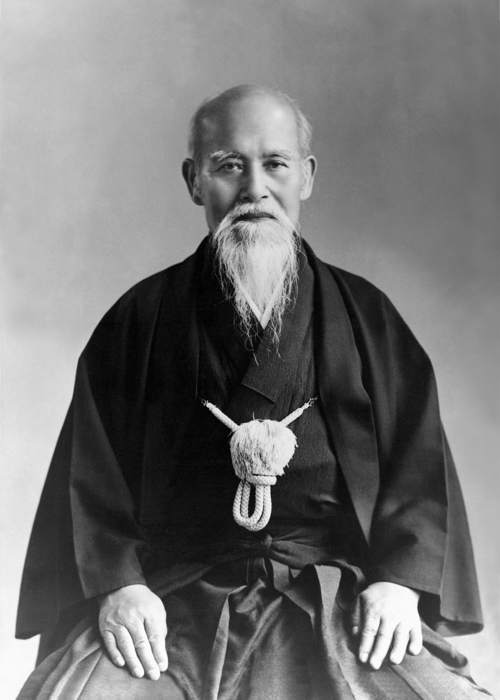

|
歴史 (Története) |
||
| Kezdőlap | Jelentése és etikája | Szellemi háttér |
|
 Osensei Emlékiratából: "Nyugodt vagyok, akárhogyan és bármikor támadnak meg. Nem ragaszkodom az élethez vagy a halálhoz. Beleegyezek mindenbe, ami csak Istennek tetsző. Távol tartom magamat az élethez való ragaszkodástól és a halál utáni vágytól, és olyan szellemem van, hogy ráhagyok mindent. Nem, csak amikor megtámadnak, de a mindennapi életben is." Ueshiba Morihei 1883 december 14-én született. Gyenge, beteges testalkata volt és gyakran betegeskedett. Már egészen kicsi gyermekkora óta vonzódott a vallás iránt. Szülei biztatására sportolni kezdett. Sumozott és úszott, hogy a két sportág kiegyensúlyozza egymást. Húszéves korában Tokióba ment és estéit a Jiu Jitsu ősi technikáinak tanulmányozásaival töltötte a Kito iskolában Tozawa mester tanítványaként. Ezzel egy időben a Shinkage Ryu dojóban Ken Jutsut (kardvívást) tanult. Mivel nagyon beteges volt elhatározta, hogy egy új és erős testet farag magának, ezért kemény edzéseket folytatott. Főleg a fizikai erőnlétre és a puszta erőre helyezte a hangsúlyt. Alacsony termete (154 cm) ellenére jóval erősebb lett az átlagtól. Nagy fizikai erejével azonban nem elégedett meg és elment Sakaiba, hogy a kard művészetét tanulmányozza a Yagyu iskolában, Nakai mesternél.1903-ban Ueshiba mester belépett a hadseregbe. Hamar kitűnt a többiek közül. A különféle edzéseken, főleg a Juken Jutsuban (szurony) a legjobb eredményeket érte el. 1915 februárjában egy utazás során találkozott a Daito iskola legnagyobb mesterével, Sokaku Takedával, aki elhatározta, hogy beavatja a Daito ryu titkos technikáiba. Hazaérkezése után Ueshiba nyitott egy dojot, ahova meghívta Takeda mestert. Épített számára egy házat és minden idejét a mesternek szentelte. 1919 novemberében találkozott Onisaburo Deguchival, aki kivételes szellemi tehetséggel megáldott misztikus mester volt. Ueshiba számára nagyon lényeges volt ez a találkozás, mert tudatában volt, hogy bár mestere az erőknek és a technikáknak, de a szellemi ereje gyenge és a legkisebb lelki megpróbáltatásnál megingatható. Édesapja 1920. január 2-án, 2 nappal Tanabéba érkezése előtt meghalt. Apja halála miatti bánatában Uyeshiba mester több hónapot meditálással töltött, majd elhatározta, hogy elmegy Ayabéba, az Omoto-Kyo templomba, hogy Onisaburo Deguchinál tanuljon. Deguchi -aki meggyőződéses pacifista volt- 1924. február 13-án Ueshiba Morihei mester néhány tanítványával elhagyta Japánt, azzal a szándékkal, hogy Mongóliában, ahol a kínai és a japán hadsereg harcban állt egymással, felépítse a Béke Birodalmát. De kísérletük kudarccal végződött, a kínai hadsereg több hónapra bebörtönözte őket. Japánba való visszatérése után Ueshiba mester még nagyobb lendülettel fogott a Budo és az aszkéta életmód tanulmányozásába. Ekkor értette meg, hogy az igazi Budo (a harcos útja) nem az ellenség legyőzése erőnk által, hanem a béke megőrzése a világon, minden teremtmény létezésének elfogadása és fejlődésének előmozdítása. A lélek vizsgálata ugyan minden japán harcművészetben megtalálható, de még soha senki nem mélyedt bele annyira ennek tanulmányozásába, hogy eljutott volna az egész emberiség szeretetéig. 1926-ban Ueshiba -mint kiváló harcművész- annyira híressé vált, hogy a világ híres politikai és katonai személyiségei tettek nála látogatást. 1931 áprilisában Wakamatsu-chóban, Tokio egyik negyedében épített egy új dojót, amelyet Kobukannak nevezett el. A háború éveiben Ueshiba Iwamába vonult vissza, 120 km-re Tokiotól. Ma is itt található az aikido szentély (Aiki JinJa) melyet saját kezűleg épített föl. Iwamában földműveléssel és a harcművészettel foglalkozott, valamint részt vett a falu irányításában. 1946-ban az amerikaiak betiltották az összes harcművészet gyakorlását Japánban, a tokioi dojót is bezárták. 1948-ban Aikikai néven a dojót újra megnyitották. Az Aikido volt az első a harcművészetek között, amely -tekintettel békés irányzatára- újra megkapta a működési engedélyt. Ettől kezdve a tanulók száma rohamosan növekedni kezdett. Ebben az időszakban született meg az Aikido modern formája. Az 50-es évektől kezdve Uyeshiba mester fokozatosan fiára és legjobb tanítványaira bízta a tanítást, akik közül sokan külföldön telepedtek le, elterjesztve így az Aikidot az egész világon.
Amikor 1969. április 26-án a tiszteletre méltó Mester elhunyt, az Aikidot már több 100 ezren gyakorolták az 5 kontinensen. Ueshiba mester utolsó szavaival azt mondta: "Az Aikidot soha ne gyakoroljátok öncélúan, mindig csak a másik emberért." |
||